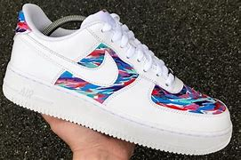

Customization may refer to: Customization (anthropology), the process of cultural appropriation and creation of bespoke design Customization (international marketing), a country-tailored product strategy Mass customization, the use of computer-aided manufacturing systems to produce custom outputs Modding, a slang expression for modification of hardware, software, or other items Car tuning, the modification of an automobile, motor bike, scooter or moped Personalization, the use of technology to accommodate differences between individuals Custom-fit, a design term for personalization with geometric characteristicss Bespoke, made to order. UK equivalent of US custom-made Custom software, software that is specially developed for some specific organization or other user.
Be it custom clothing or printed products; we help you find the one you exactly need. Our clothing design includes stunning graphics, logos, quotes, slogans, and text of your choice. You can even add your artwork to the design. Custom clothes are memorable gifting options too. They let the recipients know that you have put your thought into it.

There are tons of creative and fun ways to customize your clothes to make them look unique and represent your own personal style. If you're interested in adding a few touches of flair to an article of clothing, you can do things such as use fabric paint to create designs, sew patches onto jackets, or add lace to shorts or tank tops. For an entirely new look, try turning t-shirts into crop tops or old jeans into a pair of stylish shorts.
Customisable clothing is a solution that many brands are yet to use. It allows for garments that have a look that is specific to the brand to have customisable touches, making them more personal to the wearers. Customisable garments can also be made to order, so that you don't need to worry about leftovers. Customize your own clothes! Choose your custom clothing with cool graphics, text or quotes. Design your clothes now!

Tell us your needs, what styles and how many you want and when you need them to be completed by. We will send you quote - the more you order the cheaper it gets. Keep in mind that our minimum order quantity for most of the products is 10 units per style per design.
It is time to tell us your detailed artwork requirements and customisation details. We can add your logo and name to one of our design from our current range or tell us what you have in mind and we will create a new artwork based on your needs - we can even use your existing artworks, drawings or photos.
Dot the i's, cross the t's. We will work with you directly during the design process until you are satisfied and approve the digital mockups. Once you have checked everything is exactly how you want it, payment is required. We accept bank transfer, credit or debit card, PayPal or cheque payments.
Put your feet up. It is our manufacturing team's time to take over. We are working on your order.
Our team will inspect and pack your products before shipping. We will be letting you know when your order is en route wherever you have told us to deliver it plus send you tracking details for the courier. And you and your order live happily ever after.
Tell your friends & reorder more. Leave a review on Facebook or and tag us on Instagram (use the hashtag #siba.customization).
It is not essential. But, you know, if you want to, it would be cool with us. :)